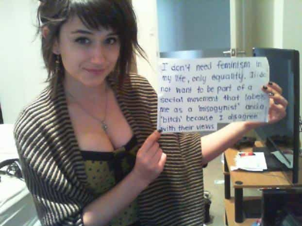
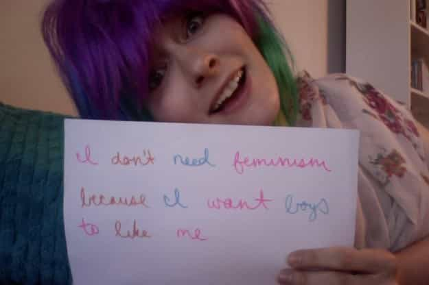
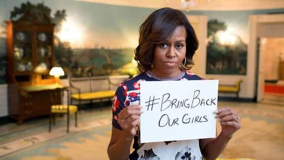
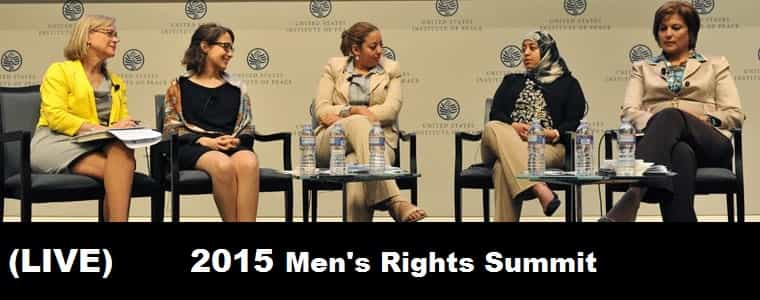
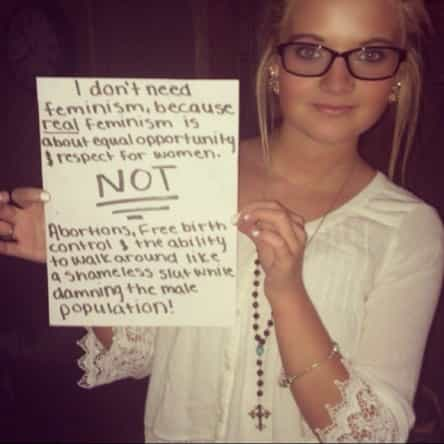
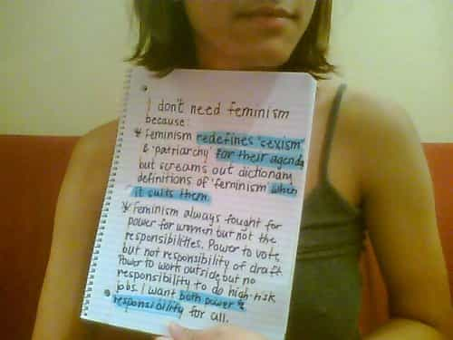

< < < Back
#WomenAgainstFeminism Is Typical Female Attention-Whoring – Return Of Kings
A curious yet inevitable trend has been circulating recently: women speaking out against feminism, centered around the hashtag #womenagainstfeminism.
And by speaking out, I mean of course that these women have resorted to the tried and true tactic of useless activism by writing something on a piece of a paper, taking a picture of themselves holding said piece of paper, and then sticking it on the internet where people can fawn over their bravery and cute faces at the same time… all done within five minutes from the safe convenience of their bedroom.

Gee, I wonder why she’s holding her sign awkwardly off to the side instead of comfortably in front of her?
Obviously, opinions on the matter differ: for some people, this represents the pendulum swinging away from the west’s bizarre social experiments with the sexes and back toward normalcy, with women finally accepting that they are, limitations and all, simply women. For others, this is just a cynical and hollow plea for attention. I’m firmly in the latter camp, for three main reasons.
1. Writing on a piece of paper doesn’t do or mean anything
This stupid, narcissistic, useless trend of writing on paper and taking a picture of yourself holding it up is one of the most embarrassing fads of the moment. That being said, I understand its appeal to the insincere people who do it. In one fell swoop, they get to show off their humanity and worldliness by announcing their support for [INSERT] cause; and they get to show the world how handsome or cute or sexy they are. It’s almost like a quickie dating profile: these gals get to show potential penises both their heart and their tits.

Writing on a piece of paper and taking a picture of yourself is one step above clicking a button on the internet. Remember the brief fad of #bringbackourgirls, a “campaign” of sign tweeters who were protesting a militia group in Africa kidnapping several young women and girls for slavery? The first lady of the United States even got in on that action.

Remember how, because of #bringbackourgirls, the world moved into Nigeria and saved all those young women and rainbows appeared over the house of every brave soul who wrote a hashtag sign? No, you don’t remember it because that never happened. Boko Haram is still active (and kicking the Nigerian military’s ass by the sounds of it) and all those girls are, as you read these very words, being raped and forced to take care of the militia fighters who stole them from their families… and it’s likely that many (if not most) have been impregnated by their kidnappers. And just to rub some salt into the wound, Boko Haram even released a video mocking the hashtag.
The first lady of the president of one of the most powerful nations on the planet couldn’t get anything done about an issue the public overwhelmingly condemned by writing on a sign and posting it on the internet. What are a bunch of random semi-cute-to-really-cute girls going to achieve with #womenagainstfeminism? Nothing. It’s a hollow gesture, intended to make the chick posting the picture feel good.
2. It continues to give women all the power in the discourse
I don’t like the Men’s Rights Movement. That isn’t a personal attack against anyone in the MRM, or those who support it (you can read my personal attack here though). I really would like to support the MRM. Yet I cannot take seriously a movement which purports to be concerned with men’s issues when they not only give women a very prominent platform in it, but essentially allow women to control the narrative about the issues.

The most mainstream discussion of the crap men have to put up with in the modern culture has centred around a book written by a woman: Men On Strike, by Helen Smith. Mrs. Smith got to do a lot of interviews, she got a lot of press in a variety of mainstream sources (with varying degrees of vitriol), and the men her book was about were shunted off to the side as if they were kids who wouldn’t understand what the “adults” were talking about. The message was made clear: men themselves are not allowed to talk about the problems society inflicts upon them. All problems concerning the sexes must be filtered through a woman’s mouth.
#womenagaisntfeminism is creating that same dynamic. The movement receives a fair amount of press simply because that it’s now women who are saying there’s a problem. News sites are talking about them, and asking just why these women are against feminism. That’s a huge amount of recognition when compared to the fact that Return Of Kings (and the many blogs and websites with content similar to ours) is under an unofficial blackout when it comes to mainstream sources talking about us. Once again: the problems created by feminism and similar doctrines can only be discussed in the setting of women talking to other women, the sex which is minimally affected by feminism. Every woman creating a #womenagaisntfeminism sign steals a bit of our thunder, further weakening our voice and legitimacy. Their hollow cheerleading is doing men far more harm than good.

As evidenced by the complete and utter (and now, forgotten) failure of #bringbackourgirls, women don’t care about results. That’s not the point of their hashtag activism. They just want that five-minute feel-good endorphin rush and some back-patting attention (preferably from men). As a man, a good measure of my prosperity, and the prosperity of my potential sons, depends upon pushing back against feminism. We men actually have skin in the game, and we have a lot to lose… to say nothing of how much men have already lost to the insanity of feminism. The #womenagainstfeminism have no investment in the debate, and for them it doesn’t actually matter if feminism continues or not. They will prosper either way, as women always have.
3. They are not actually against feminism
Feminism is a tricky word. It has a hundred different definitions, mostly because very few people besides its critics want to admit what feminism really is at its core.
Feminism is simply, and completely, about maximizing the transfer of resources from men to women.
Said resources encompass several things, both tangible and intangible: money, job opportunities, respect, power, love, etc. Feminism is about giving women as much as possible at the expense of men. That’s it, the nitty gritty so to speak. Some of the #womenagainstfeminism mention equality on their signs, but what does equality mean? It means a level playing field, with no inherent biases or advantages to either sex.

And on a level playing field men would dominate. That’s not theoretical either, just simple fact. There’s a reason why, since the dawn of the species, men have been the builders, hunters, workers, and creators, and women were the ones who kept the home clean and raised the kids. Men dominate women in every category. If we were truly to eliminate feminism, the vast majority of women would have to revert to being submissive housewives referring to their husbands authority… or face destitute spinsterhood.
Gone would be the university admittance favouritism for women, and the easy humanities courses which enable them to actually get a degree in the first place. Gone, the lowered entry standards for jobs and careers—a woman who wanted to be a soldier would actually have to keep up with the men in her platoon, instead of being coddled through training (and in an truly equal society, women would be conscripted for the military: though realistically we men wouldn’t allow that for a variety of reasons). Even if a woman wanted to do something simple, like work in a business, she’d have to put in the same hours and dedication a man does or risk being fired; no more clocking out at 4 pm sharp if there’s still work to do, no more constantly-tolerated sick days because her menses are crippling her (or for the more likely reason, that she went out last night and got, like, toootally wasted).

I’m fairly amused that this anti-feminist is apparently not wearing a bra
There would be no more holding their marriage hostage just because women today know they will financially rape a man in court if he has the nuts to divorce her. If she becomes fat, or lazy, or no longer has sex with her husband, then he would have the right to divorce her and get back all the finances he put into the marriage… and likely any children created during the union, since the child would go to the most capable parent and it’s long been proven that single mothers are much worse at raising their children than single fathers.
There would be no more partying away her twenties. No more hookup culture, no more spring break trips with the gurrrls to Mexico or Italy; in an equal society, those types of women would be shunned and would wind up marrying only the most pathetic of men (though a very few might luck out and find a rich dude with a cuckold fetish). Men would no longer feel compelled to marry sluts, and all the safety nets of being a slut would be gone.
How many of these women would actually be all for that? Because that’s what a world without enforced feminism would look like; not because of the evil patriarchy, but simply because men are better than women at most things. These chicks say they’re against feminism, but they and their proud feminist sisters are still enjoying the exact same benefits that feminism has bestowed upon them, all the while avoiding the responsibilities those benefits would entail if they happened to be men. If it came right down to it, would #womenagainstfeminism actually put her money where her mouth was? Of course she wouldn’t.
Remember the golden rule about women: Judge them only by what they do, not what they say. Stupid signs posted on the internet included.
#womenagainstfeminism, no matter their reasoning for it, will only cause more problems for the men who are trying to fix our broken cultures. Cheerlead for us all you like ladies, but stop trying to put yourself at the front of this debate. Only men can fix what’s wrong between the sexes, and by hijacking the spotlight for themselves these women who are supposedly “on men’s side” only ensure that the discourse will remain solely between women, and that men’s opinions on all these matters which grievously affect him will continue to be ignored and belittled. Women who continue to side with men simply for the attention only ensure that there will be no healing, and one day men will simply stop attempting to find a peaceful and fair resolution, and start exploring darker avenues to getting what they want. We should all fear that day.
Read More: Top 10 Pictures From The Growing “Women Against Feminism” Movement


{kind=link}
{kind=link}
{kind=link}
{kind=link}
{kind=link}
{kind=link}
{kind=link}